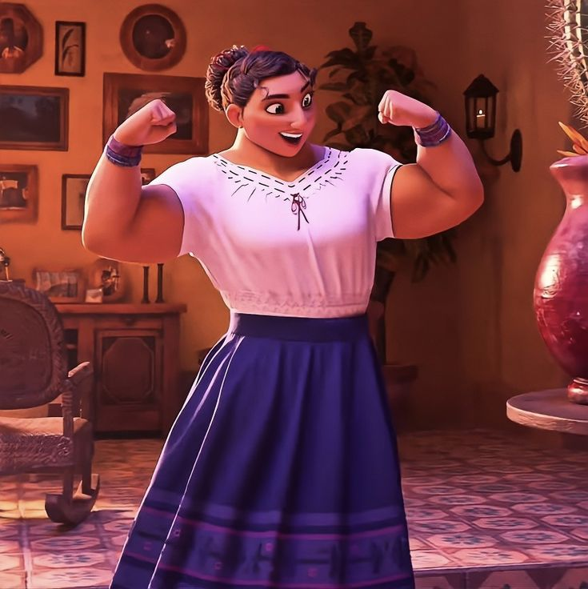
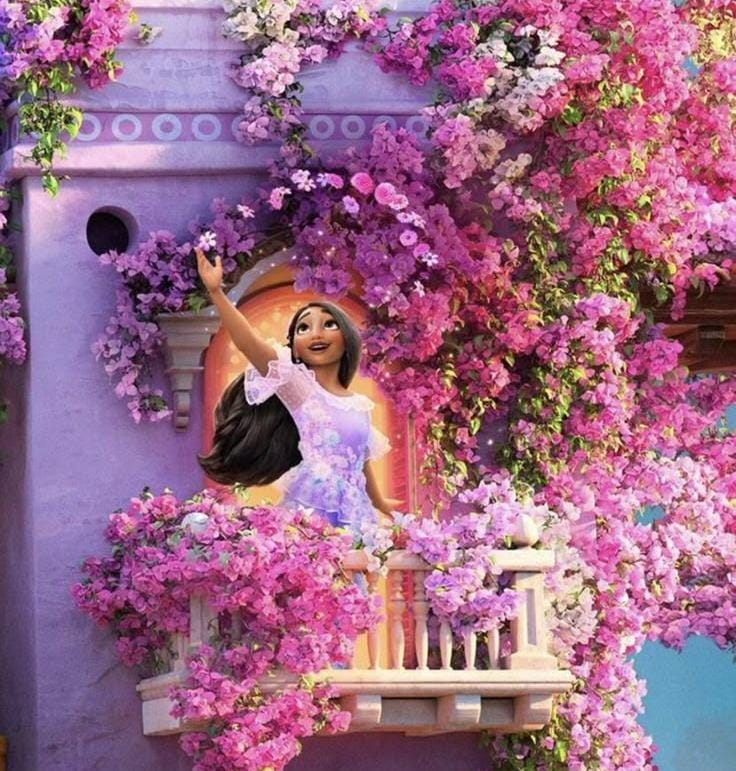

Mirabel Madrigal plays an important role in her family. Even though she does not have magical powers like the others, she notices that something is wrong with the family's magic. Mirabel bravely searches for the truth and helps bring her family back together.

Luisa Madrigal is known for her incredible strength. She helps the village by lifting heavy objects and solving difficult problems. Although she looks very strong, Luisa sometimes feels pressure because everyone depends on her powers.

Isabela Madrigal has the magical ability to grow flowers and plants. At first she only creates perfect roses, but later she discovers she can create many different kinds of plants. Her creativity brings beauty and color to the village.